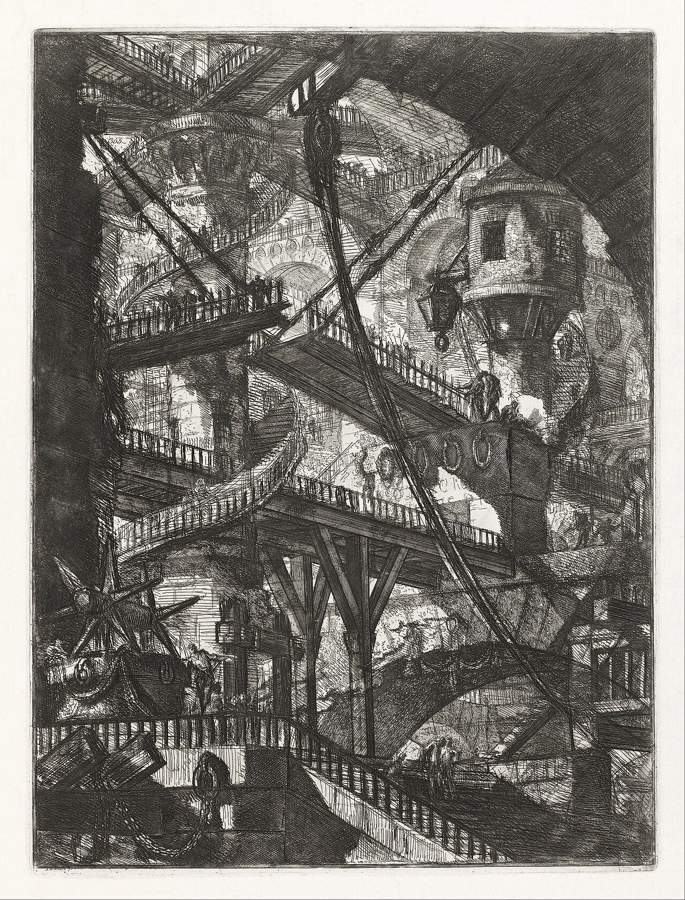
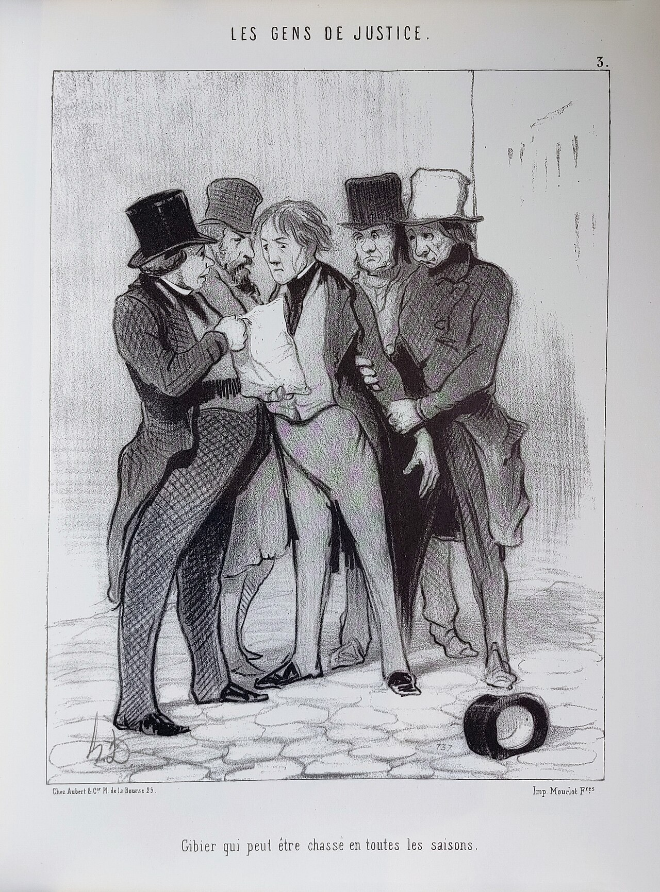
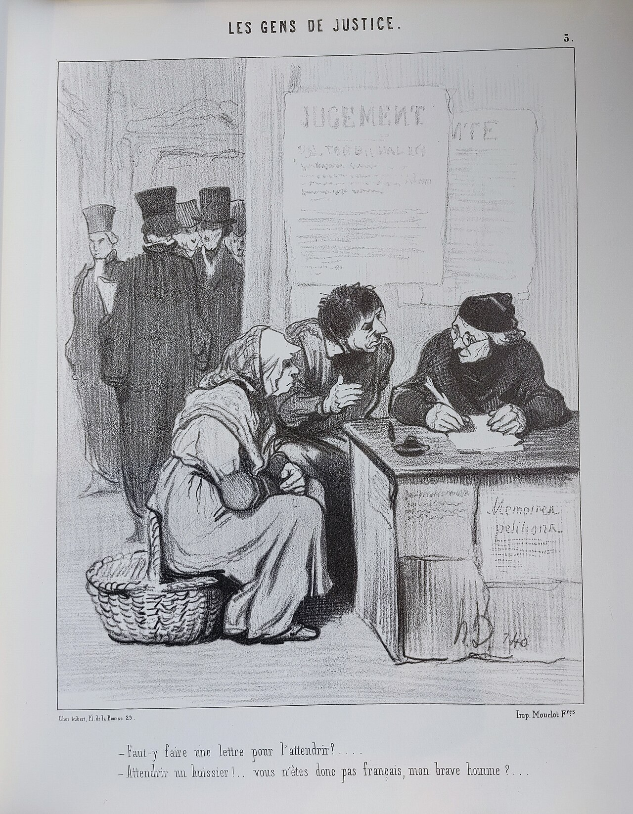

Bac professionnel · Première professionnelle · Français · Lycée professionnel
Victor Hugo et la justice
Le Dernier Jour d'un condamné (1829), Claude Gueux (1834). Dix séances, la spirale de Gorse, un oral pédagogique et un écrit associé.
Madame Carole Paoli Pompougnac
Entrer dans la séquence
Fiche de présentation, à afficher ou à imprimer (objectifs, épreuves, déroulé, évaluations, téléchargements).
Une version de cette séquence, pour le baccalauréat technologique du lycée général et technologique, est également disponible.
On lit Le Dernier Jour d'un condamné (1829) et Claude Gueux (1834) pour suivre un personnage, et pour observer comment un récit construit notre jugement. On ne demande pas d'adhérer à une conclusion avant d'avoir lu.
Question d'entrée. Une histoire peut-elle changer notre manière de juger ?
Trois réponses de départ sont recevables : oui, parce qu'elle nous fait voir ce que nous ignorions ; non, parce qu'une histoire ne suffit pas à prouver une idée ; cela dépend de la manière dont elle est racontée. Le travail commence par cette hésitation. Il ne la supprime pas.
Deux problématiques conservées
- Le Dernier Jour d'un condamné. Comment l'écriture à la première personne transforme-t-elle une peur intime en combat universel ? Reformulation : comment la peur d'un seul homme peut-elle nous faire réfléchir au sort de tous les condamnés ?
- Claude Gueux. En quoi la littérature démontre-t-elle que la société fabrique les criminels qu'elle punit ? Reformulation : comment Hugo montre-t-il qu'une société peut contribuer aux crimes qu'elle condamne ? Expliquer un crime ne revient pas à supprimer toute responsabilité individuelle.
La spirale de Gorse
Méthode de la spirale de Gorse conçue par Madame Carole Paoli Pompougnac. Cinq étapes, dans cet ordre : Je remarque, Je repère, Je comprends, J'anticipe, Je trouve le sens. L'idée est à l'extérieur du tour, la preuve à l'intérieur. On ne saute pas à la pointe. « J'anticipe » ne signifie pas deviner la suite : on prévoit l'effet d'un choix d'écriture, puis on vérifie.


Édition de référence
Les textes sont cités d'après les Œuvres complètes de Victor Hugo, texte établi par Gustave Simon, Imprimerie nationale, Ollendorff, 1910, sur Wikisource, Le Dernier Jour d'un condamné et Claude Gueux. Hugo est dans le domaine public : les extraits sont donnés largement, avec le chapitre.
Les images de Daumier et de Piranèse aident à regarder une représentation de la justice ou de la prison. Elles ne prouvent pas le récit de Hugo.
Séance 1. Peut-on juger sans entendre une voix ?
Tour 1 de la spirale de Gorse.
Question de travail. Peut-on juger sans entendre une voix ?
Séance de 55 minutes, conduite sur 52, avec un point d'arrêt et une sortie de secours de huit minutes. Chaque élève laisse une trace écrite, prend la parole, et emporte un devoir.
Évaluation diagnostique
Lisez les deux ouvertures. Identifiez qui parle. Relevez un mot ou une phrase, puis dites ce qu'elle change. Formulez une première comparaison, en une phrase. On n'attend pas encore un paragraphe achevé.
Texte A. Victor Hugo, Le Dernier Jour d'un condamné, chapitre I. « Condamné à mort ! Voilà cinq semaines que j'habite avec cette pensée, toujours seul avec elle, toujours glacé de sa présence, toujours courbé sous son poids ! »
« Maintenant je suis captif. Mon corps est aux fers dans un cachot, mon esprit est en prison dans une idée. » Wikisource
Texte B. Victor Hugo, Claude Gueux, incipit. « L'homme vola. Je ne sais ce qu'il vola, je ne sais où il vola. Ce que je sais, c'est que de ce vol il résulta trois jours de pain et de feu pour la femme et pour l'enfant, et cinq ans de prison pour l'homme. » Wikisource
Langue : celui qui écrit, celui qui parle
Dans le texte A, un « je » parle de l'intérieur. Dans le texte B, un narrateur raconte à la troisième personne, et intervient : « Je dis les choses comme elles sont. » Distinguez l'auteur (Hugo), le narrateur, et le personnage.
Trace écrite
Une phrase sur chaque ouverture, avec une courte citation.
Travail à la maison
Relisez le début du chapitre I. Notez deux reprises du mot « condamné ». Préparez trente secondes : « Ce que change, pour moi, le je de Hugo. »
Point d'arrêt et sortie de secours
On emporte au moins : une différence de voix, une citation, une phrase de comparaison. Le reste est reporté, sans supprimer le devoir.
Parcours autonome, y compris après une absence
Recopiez la première phrase de A et la phrase « L'homme vola. » Soulignez qui parle. Dites une différence, en une phrase. La version accessible complète est dans le livret.
Séance 2. Comment une idée devient-elle une prison ?
Tour 2 de la spirale de Gorse.
Question de travail. Comment une idée devient-elle une prison ?
Séance de 55 minutes, conduite sur 52, avec un point d'arrêt et une sortie de secours de huit minutes. Chaque élève laisse une trace écrite, prend la parole, et emporte un devoir.
On lit le chapitre I à voix haute, par fragments courts. On remplit la spirale, étape par étape, sans sauter à la pointe.
Exemple déjà fait. Je remarque : la condamnation envahit la parole. Preuve : « Condamné à mort ! » Je repère : le passé libre s'oppose au présent captif (« Autrefois », « Maintenant »).
Langue : opposition
Relevez « Autrefois » et « Maintenant ». Transformez les deux états en une phrase avec « alors que ». Observez aussi le parallélisme : « Mon corps est aux fers dans un cachot, mon esprit est en prison dans une idée. »
Trace écrite
Un paragraphe court : une idée, une citation, une analyse, ce que cela change dans la lecture.
Travail à la maison
Apprenez une carte (anaphore, ou opposition). Enregistrez une lecture expressive de « Condamné à mort ! », une minute au plus.
Point d'arrêt et sortie de secours
On emporte les trois premières étapes de la spirale, avec une preuve. La pointe, si elle manque, est reprise à la maison.
Parcours autonome, y compris après une absence
Remplissez trois étapes seulement : Je remarque, Je repère, Je comprends. Une idée courte à l'extérieur, une preuve à l'intérieur.
Séance 3. Une lecture peut-elle faire éprouver l'enfermement ?
Tour 3 de la spirale de Gorse.
Question de travail. Une lecture peut-elle faire éprouver l'enfermement ?
Séance de 55 minutes, conduite sur 52, avec un point d'arrêt et une sortie de secours de huit minutes. Chaque élève laisse une trace écrite, prend la parole, et emporte un devoir.
On distingue une observation (« le mot toujours est répété ») et un effet (« le lecteur n'a plus d'intervalle pour une autre pensée »). On relit un court passage du chapitre I, puis on observe une prison inventée, pour comparer deux manières de représenter l'enfermement.

Tâche brève sur l'image. Repérez les lignes, les niveaux, la place des êtres humains. L'espace semble-t-il offrir une issue ? Cette gravure n'est pas une vue de la prison de Hugo : elle aide à formuler ce que le texte, lui, fait avec des mots.
Langue : observation et effet
Complétez : « Je remarque le mot… » puis « Ce mot me fait éprouver… parce que… ». Évitez de vous arrêter à « c'est triste ».
Trace écrite
Deux phrases : ce que le texte fait éprouver ; ce que l'image donne à voir, sans la confondre avec le roman.
Travail à la maison
Choisissez une phrase du chapitre I. Écrivez : je cite, je décris la phrase, je dis l'effet.
Point d'arrêt et sortie de secours
On emporte une observation, un effet, et une précaution sur l'image. Le reste est reporté.
Parcours autonome, y compris après une absence
Recopiez une phrase du texte. Puis répondez, en une phrase, à propos de l'image : voit-on une sortie ?
Séance 4. Raconter des faits suffit-il à être neutre ?
Tour 4 de la spirale de Gorse.
Question de travail. Raconter des faits suffit-il à être neutre ?
Séance de 55 minutes, conduite sur 52, avec un point d'arrêt et une sortie de secours de huit minutes. Chaque élève laisse une trace écrite, prend la parole, et emporte un devoir.
On entre dans Claude Gueux. Le narrateur a l'allure d'un rapporteur de faits. On vérifie s'il oriente pourtant le jugement.
« L'ouvrier était capable, habile, intelligent, fort maltraité par l'éducation, fort bien traité par la nature, ne sachant pas lire et sachant penser. Un hiver, l'ouvrage manqua. Pas de feu, ni de pain dans le galetas. L'homme, la fille et l'enfant eurent froid et faim. L'homme vola. » Wikisource
À ne pas confondre. Expliquer le vol (la faim, le manque d'ouvrage) n'est pas le nier, et n'est pas l'excuser automatiquement.
Langue : cause et conséquence
Observez l'ordre : « Pas de feu, ni de pain… L'homme vola. » Puis le contraste : trois jours de pain et de feu, cinq ans de prison. Distinguez le lien que le récit construit et ce qu'un jugement devrait encore établir.
Trace écrite
Quatre phrases : une observation, une citation, une analyse, une limite (ce que le texte n'efface pas).
Travail à la maison
Apprenez le passage « L'homme vola… cinq ans de prison pour l'homme. » Préparez trente secondes : « Ce récit est-il neutre ? »
Point d'arrêt et sortie de secours
On emporte le contraste des durées et une phrase de limite. La spirale complète, si elle manque, est reprise à la maison.
Parcours autonome, y compris après une absence
Recopiez « L'homme vola. » Puis « trois jours » et « cinq ans ». Dites, en une phrase, ce que ce rapprochement vous fait penser, sans effacer le vol.
Séance 5. Que représente Albin pour Claude ?
Tour 5 de la spirale de Gorse.
Question de travail. Pourquoi la séparation de deux prisonniers devient-elle un événement décisif ?
Séance de 55 minutes, conduite sur 52, avec un point d'arrêt et une sortie de secours de huit minutes. Chaque élève laisse une trace écrite, prend la parole, et emporte un devoir.
Parcours jusqu'ici. Claude manque de travail, il vole, il est condamné à cinq ans de prison. À Clairvaux, il travaille mais souffre de la faim. Albin partage sa nourriture avec lui.
« Une larme roula dans l'œil hautain de Claude. Il prit le couteau, partagea la ration du jeune homme en deux parts égales, en prit une, et se mit à manger. »
« Ils travaillaient dans le même atelier, ils couchaient sous la même clef de voûte, ils se promenaient dans le même préau, ils mordaient au même pain. Chacun des deux amis était l'univers pour l'autre. Il paraît qu'ils étaient heureux. » Wikisource
Mots d'appui. Ration : quantité de nourriture attribuée. Préau : espace de promenade. « Il paraît » : le narrateur rapporte une impression, il n'accède pas à toute leur vie intérieure.
La séparation
Claude demande le retour d'Albin. Le directeur répond notamment : « Je ne reviens jamais sur mes décisions. » et « Parce que ». Wikisource
Une décision devient-elle juste parce qu'elle ne change jamais ? Le récit présente ce refus comme un élément de l'escalade. Cela ne transforme pas le meurtre à venir en solution légitime.
Langue : opposition avec « alors que »
Exemple : « Albin partage son pain, alors que le directeur refuse de justifier sa décision. » Associez : solidarité, autorité, arbitraire.
Trace écrite
Le pain est d'abord une nourriture. En deux phrases, montrez comment le partage devient aussi un lien, puis ce que le refus du directeur change.
Travail à la maison
Relisez le passage. Préparez une minute : « Que représente Albin pour Claude ? » Citez « l'univers pour l'autre » ou « le même pain ».
Point d'arrêt et sortie de secours
On emporte le partage, un mot répété (« même »), et le refus sans justification. Le débat, s'il manque, est reporté.
Parcours autonome, y compris après une absence
Soulignez « même » dans le passage. Recopiez « l'univers pour l'autre ». Dites, en une phrase, ce qu'Albin apporte à Claude.
Séance 6. Qui le récit met-il en accusation ?
Tour 6 de la spirale de Gorse.
Question de travail. Comment le narrateur transforme-t-il l'histoire de Claude en question collective ?
Séance de 55 minutes, conduite sur 52, avec un point d'arrêt et une sortie de secours de huit minutes. Chaque élève laisse une trace écrite, prend la parole, et emporte un devoir.
Avant de lire la suite, sans rechercher le sensationnel. Claude annonce son intention de tuer le directeur. Il lui demande encore le retour d'Albin. Le directeur refuse. Claude le tue. Il est jugé, condamné à mort, et exécuté le 8 juin 1832. Le récit fait entendre sa reconnaissance des actes, et aussi sa demande : examiner pourquoi il a volé et pourquoi il a tué.
« Cet homme, certes, était bien né, bien organisé, bien doué. Que lui a-t-il donc manqué ? Réfléchissez. »
« Voyez Claude Gueux. Cerveau bien fait, cœur bien fait, sans nul doute. Mais le sort le met dans une société si mal faite, qu'il finit par voler ; la société le met dans une prison si mal faite, qu'il finit par tuer. Qui est réellement coupable ? Est-ce lui ? Est-ce nous ? » Wikisource
Évaluation de mi-parcours, vingt minutes
Sur le passage ci-dessus : relevez deux expressions qui s'opposent ; qui est « lui », qui peut être inclus dans « nous » ; expliquez l'effet de « Est-ce lui ? Est-ce nous ? » ; nuancez en deux phrases (le récit oriente le jugement, sans effacer les actes de Claude). Puis une prise de parole courte.

Langue : questions oratoires
« Est-ce lui ? Est-ce nous ? » n'attend pas seulement un oui ou un non. Les questions déplacent la réflexion du cas vers ceux qui regardent, jugent ou organisent la société.
Trace écrite
Après le retour de la copie, une version améliorée selon la grille : repérer, expliquer, nuancer, langue.
Travail à la maison
Corrigez votre copie. Recopiez la nouvelle version de la question « Est-ce lui ? Est-ce nous ? »
Point d'arrêt et sortie de secours
L'écrit de vingt minutes est prioritaire. L'image, si le temps manque, est observée en devoir : qui parle, qui doit se justifier ?
Parcours autonome, y compris après une absence
Soulignez « lui » et « nous ». Complétez : « Ces questions déplacent la réflexion de… vers… »
Séance 7. Qui regarde qui ?
Tour 7 de la spirale de Gorse.
Question de travail. Qui regarde qui dans une scène de punition ?
Séance de 55 minutes, conduite sur 52, avec un point d'arrêt et une sortie de secours de huit minutes. Chaque élève laisse une trace écrite, prend la parole, et emporte un devoir.
On lit le ferrage des forçats, au chapitre XIII du Dernier Jour d'un condamné, puis un moment du chapitre XLVIII, où le temps se resserre. La peine devient un spectacle, et le « je » découvre qu'il peut devenir, à son tour, l'objet du regard.
Au chapitre XIII, la foule et les forçats se regardent. Le condamné comprend qu'il aurait pu, lui aussi, « être un spectacle pour eux ». Wikisource, chapitre XIII
Au chapitre XLVIII, le corps peut refuser ce que l'intelligence voudrait encore affronter. Wikisource, chapitre XLVIII
Langue : qui agit, qui est regardé
Relevez les pronoms et les verbes de regard. Qui expose, qui applaudit, qui est vu ? Une concession permet de reconnaître le spectacle et d'en refuser la leçon.
Trace écrite
Qui est exposé, qui regarde, et ce que cela change dans la lecture, en trois phrases, avec une citation.
Travail à la maison
Préparez une restitution orale d'une minute, avec une citation du chapitre XIII.
Point d'arrêt et sortie de secours
On emporte le renversement du regard et une citation. Le chapitre XLVIII, s'il n'a pas été lu, est reporté sans supprimer le devoir.
Parcours autonome, y compris après une absence
Relevez une phrase où la foule apparaît, et une phrase où le « je » se voit comme un spectacle possible. Dites, en une phrase, ce que cela change.
Séance 8. Pourquoi cultiver une tête plutôt que la couper ?
Tour 8 de la spirale de Gorse.
Question de travail. Pourquoi cultiver une tête plutôt que la couper ?
Séance de 55 minutes, conduite sur 52, avec un point d'arrêt et une sortie de secours de huit minutes. Chaque élève laisse une trace écrite, prend la parole, et emporte un devoir.
« Cette tête de l'homme du peuple, cultivez-la, défrichez-la, arrosez-la, fécondez-la, éclairez-la, moralisez-la, utilisez-la ; vous n'aurez pas besoin de la couper. » Wikisource
La métaphore agricole est filée : plusieurs verbes d'un même champ construisent une pensée suivie. L'antithèse oppose « cultivez-la » et « la couper ». L'impératif pluriel s'adresse à ceux qui peuvent encore agir.
Une limite à ne pas effacer. Le paragraphe précédent propose notamment une éducation religieuse, et une patience demandée au peuple. La fin ne présente donc pas exactement notre conception actuelle de l'école. Cette différence historique se signale, sans détourner l'analyse du passage.

Langue : impératif et métaphore filée
Soulignez les impératifs. Entourez « la couper ». Dites à qui le narrateur s'adresse, et ce qu'il demande. On peut étudier la force du passage tout en interrogeant sa relation verticale : le peuple est aussi le destinataire d'une action conduite par d'autres.
Trace écrite
Analyse de l'adresse et des images, avec la citation complète. Une phrase de limite historique.
Travail à la maison
Apprenez le passage. Préparez une lecture à voix haute, puis trente secondes : « Pourquoi cultiver plutôt que couper ? »
Point d'arrêt et sortie de secours
On emporte l'antithèse, une preuve, et la limite historique. L'image, si le temps manque, est observée en devoir.
Parcours autonome, y compris après une absence
Recopiez la phrase. Soulignez les impératifs. Entourez « la couper ». Dites, en deux phrases, ce que le narrateur demande.
Séance 9. Comment passer du résumé à l'interprétation ?
Tour 9 de la spirale de Gorse, appliquée au choix d'une œuvre.
Question de travail. Comment passer du résumé à l'interprétation ?
Séance de 55 minutes, conduite sur 52, avec un point d'arrêt et une sortie de secours de huit minutes. Chaque élève laisse une trace écrite, prend la parole, et emporte un devoir.
Statut de l'exercice. Vous préparez une présentation littéraire de cinq minutes au maximum, puis vous vous entraînez à répondre. Cette évaluation de classe n'est pas l'épreuve officielle de contrôle, et les deux œuvres de Hugo ne figurent pas au programme limitatif de terminale pour 2024-2027. Vous entraînez des compétences utiles pour un entretien littéraire.
Plan d'un exposé de cinq minutes au maximum
- L'œuvre choisie, et pourquoi elle compte, pour vous, en une phrase.
- Un passage précis, cité et situé dans l'histoire du personnage.
- Ce que ce passage change dans notre manière de juger.
- Une limite de votre interprétation.
Deux amorces, à comprendre, non à réciter. « Dans ce passage, le « je » fait éprouver… grâce à… » « Le narrateur de Claude Gueux oriente mon jugement lorsque… ; toutefois, il n'efface pas… »
Langue : résumé ou analyse
Un résumé dit ce qui arrive. Une analyse dit comment c'est raconté, et ce que cela change. Transformez une phrase de résumé en phrase d'analyse, en ajoutant un procédé et un effet.
Trace écrite
Le cadre de préparation : œuvre, phrase de justification, citation, limite, une question possible.
Travail à la maison
Chronométrez une présentation de cinq minutes. Notez ce qui était récité, et ce qui s'appuyait sur un passage.
Point d'arrêt et sortie de secours
On emporte le plan en quatre points et une citation vérifiée. Les passages à l'oral, s'ils manquent, sont repris en séance 10.
Parcours autonome, y compris après une absence
Remplissez le cadre : œuvre choisie ; pourquoi elle compte, en une phrase ; une courte citation ; une limite.
Séance 10. Comment répondre sans réciter ?
Tour 10 de la spirale de Gorse.
Question de travail. Comment répondre sans réciter ?
Séance de 55 minutes, conduite sur 52, avec un point d'arrêt et une sortie de secours de huit minutes. Chaque élève laisse une trace écrite, prend la parole, et emporte un devoir.
On s'entraîne à l'entretien qui suit la présentation. On écoute la question, on reformule, on justifie par un passage, on nuance. Les passages individuels de l'oral pédagogique, quinze minutes après quinze minutes de préparation, ont lieu sur des créneaux dédiés : une classe entière ne peut pas les tenir dans une seule séance de 55 minutes.
Banque de questions, parmi d'autres
- Pourquoi choisir un livre du XIXe siècle pour parler d'un sujet encore actuel ?
- Une histoire suffit-elle à changer une loi ?
- Expliquer un crime, est-ce l'excuser ?
- Quel lien faites-vous entre les deux œuvres ?
- Quelle limite donnez-vous à votre interprétation ?
Langue : répondre à l'objection
Amorces. « Je comprends la question ; je la reformule ainsi… » « Je suis d'accord sur… ; toutefois le texte montre aussi… » « Mon exemple ne prouve pas que tous…, mais il montre que… »
Trace écrite
Une question, une amorce de réponse, une citation, une nuance.
Travail à la maison
Enregistrez une réponse d'une minute à l'une des questions. Écoutez-vous. Proposez une version écrite améliorée, de six à huit lignes.
Point d'arrêt et sortie de secours
On emporte une question, une preuve, une amorce. Les entraînements en groupe, s'ils manquent, sont reportés sans supprimer le devoir.
Parcours autonome, y compris après une absence
Choisissez une question. Complétez : « Je comprends l'objection ; elle m'oblige à distinguer… » Ajoutez une courte citation.
Évaluations
Diagnostique, séance 1
Deux ouvertures, la voix, un procédé, une première comparaison. Sans note lourde. On valorise une observation précise et une courte citation.
Mi-parcours, séance 6
Écrit de vingt minutes, sur le passage « Est-ce lui ? Est-ce nous ? ». Grille : repérer, expliquer, nuancer, langue. Puis une prise de parole courte, et une version améliorée.
Sommative, après les séances 9 et 10
Oral pédagogique : présentation de cinq minutes au maximum, puis entretien. Écrit argumentatif associé. Titre à inscrire : « Évaluation orale pédagogique : Victor Hugo et la justice. » Sous-titre : « Entraînement aux compétences de présentation et d'entretien. Ce travail n'est pas une épreuve certificative du baccalauréat professionnel. »
Le cadre temporel peut emprunter la note de service du 31 décembre 2021 (15 et 15 minutes, exposé initial de cinq minutes au maximum). Le contenu reste distinct du programme limitatif de terminale. Les passages individuels exigent des créneaux complémentaires.
Les corrigés et les grilles sont dans la fiche de correction et sur cet onglet, à afficher ou à masquer selon le moment du travail.
Téléchargements
-
Fiche de présentation (la page, à imprimer)
-
Séquence élève
-
Fiche professeur
-
Fiche de correction
-
Version accessible
Une version de cette séquence, pour le baccalauréat technologique du lycée général et technologique, est également disponible.
conçu par Madame Carole Paoli Pompougnac, mis en page par Grok. Couverture : Daniel Léon Saubès, d'après Léon Bonnat, Portrait de Victor Hugo, 1879, huile sur toile, Maison de Victor Hugo, Paris. Domaine public, via Wikimedia Commons. Images de séance : Daumier et Piranèse, domaine public, via Wikimedia Commons. Spirale de Gorse : illustration originale. Méthode de la spirale de Gorse conçue par Madame Carole Paoli Pompougnac.